圖片來源與授權
本區圖片全部取自 Wikimedia Commons 的自由授權素材（公有領域 Public Domain／CC0／CC BY／CC BY-SA），未使用 AI 生成圖。
依授權要求標示作者與授權條款；CC BY-SA 授權之圖片僅作本教育網站使用，轉載請同樣遵守該授權。
水果
| 圖片 | 詞 | 原始檔名 | 作者 | 授權 | 來源 |
|---|---|---|---|---|---|
 | 可可果 | Theobroma cacao (cacau) open fruit.jpg | Rodrigo.Argenton | CC BY-SA 4.0 | Commons |
 | 咖啡果 | Ripe Seeds Coffee Robusta Coorg Karnataka India Feb24 D72 25688.jpg | This Photo was taken by Timothy A. Gonsalves. Feel free to use my photos, but please ment | CC BY-SA 4.0 | Commons |
 | 哈密瓜 | Cantaloupe Melon cross section.png | Sangfroid | Public domain | Commons |
 | 國語 | Calligraphy brush at Zhu Jiuying's former residence.jpg | Mx. Granger | CC0 | Commons |
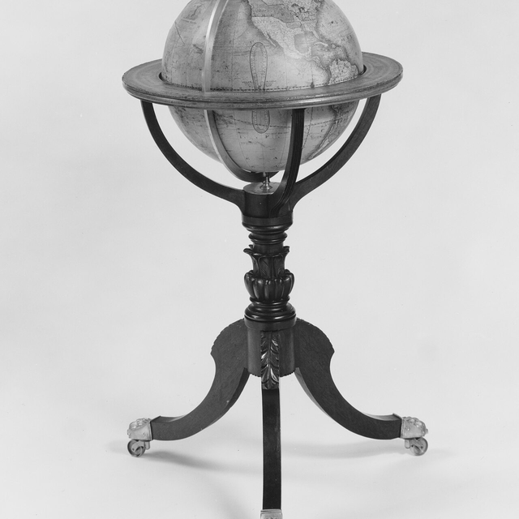 | 地理 | Terrestrial Globe MET 240594.jpg | Creator:James Wilson | CC0 | Commons |
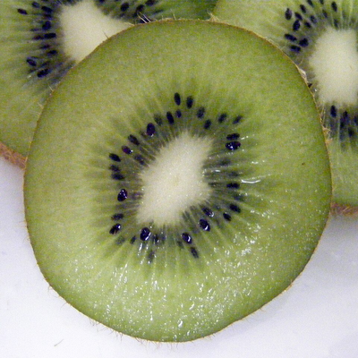 | 奇異果 | Kiwifruit, slice.jpg | J.smith | CC BY-SA 3.0 | Commons |
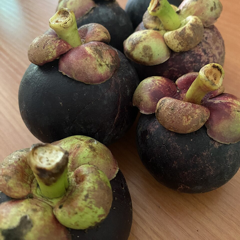 | 山竹 | Monggis (Mangosteen).jpg | Elaine Mae Yon Jimin | CC BY 4.0 | Commons |
 | 愛玉 | Ficus pumila awkeotsang 452195944.jpg | Tzu-Neng Yuan | CC BY 4.0 | Commons |
| 政治 | 2023 Polish parliamentary election and referendum. October 2023. Ballot box in Tomaszów Mazowiecki, Sikorskiego Street 6A.jpg | WrS.tm.pl | Public domain | Commons | |
 | 數學 | 20th Century Small Wooden Abacus.jpg | Deinodactyla | CC0 | Commons |
 | 李子 | Plums - The Fruit Bowl, Brighton 2023-08-23.jpg | Andy Li | CC0 | Commons |
 | 杏子 | Yellow apricot (20240603).jpg | Fumikas Sagisavas | CC0 | Commons |
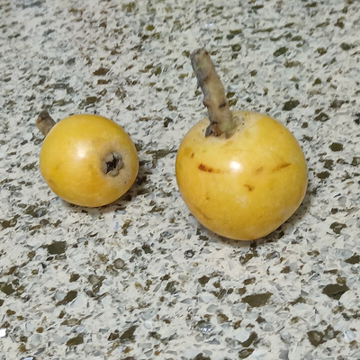 | 枇杷 | Two loquat fruits.jpg | Franklin Rainier | Public domain | Commons |
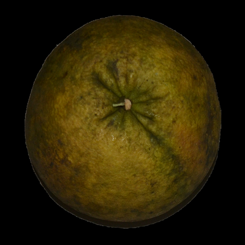 | 柚子 | South Indian Pomello.png | Viswaprabha | CC BY-SA 3.0 | Commons |
 | 柳橙 | Orange Sliced White Background.jpg | AGermanBeck | CC BY-SA 4.0 | Commons |
 | 柿子 | Хурма-бычьесердце (bull heart persimmons) ноябрь 2025 13.jpg | Retired electrician | CC0 | Commons |
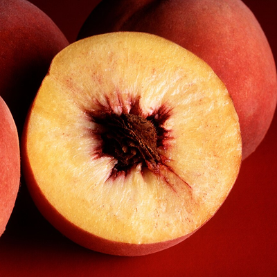 | 桃子 | Autumn Red peaches.jpg | Jack Dykinga, USDA | Public domain | Commons |
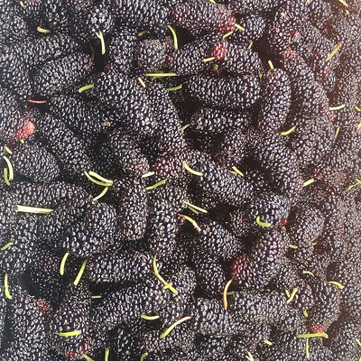 | 桑葚 | Mulberry fruit (1).jpg | Fumikas Sagisavas | CC0 | Commons |
 | 梨子 | Pears.jpg | Keith Weller | Public domain | Commons |
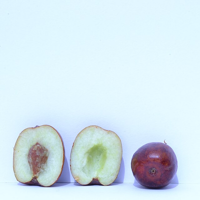 | 棗子 | Jujube cross section.jpg | SilverBullet X | CC0 | Commons |
 | 椰子 | Oval shaped brown coconut (4268223207).jpg | Old Photo Profile | CC BY 2.0 | Commons |
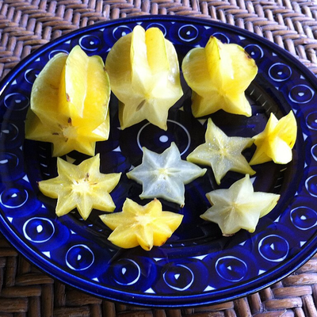 | 楊桃 | Carambolas765pt.jpg | K-MUS | CC0 | Commons |
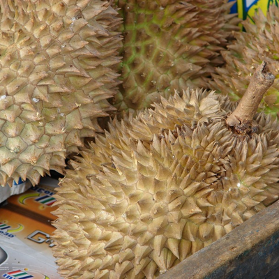 | 榴槤 | Durian, le fruit qui pue.jpg | Flickr user: burgermac from Pornichet, France | CC BY 2.0 | Commons |
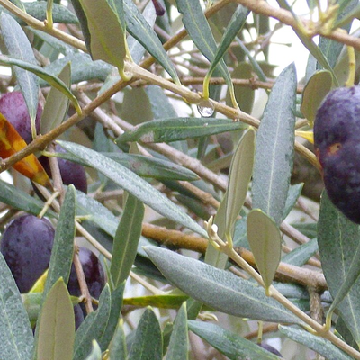 | 橄欖 | Olea europaea FruitsandLeaves 2009December13 DehesaBoyaldePuertollano.jpg | Javier martin | Public domain | Commons |
 | 橘子 | Mandarin fruit on white background.jpg | Paolo Neo | Public domain | Commons |
 | 檸檬 | Lemon with white background.jpg | Bordercolliez | CC0 | Commons |
 | 櫻桃 | Cherry fruit on white background.jpg | Paolo Neo | Public domain | Commons |
 | 水果 | Fruit Platter- Seasonal Fruits.jpg | روتانا | CC BY 4.0 | Commons |
 | 火龍果 | Dragon Fruit 02.jpg | Indrajit Das | CC BY-SA 4.0 | Commons |
 | 無花果 | Ficus carica fruits - ώριμα σύκα.jpg | Ανώνυμος Βικιπαιδιστής | CC BY 3.0 | Commons |
 | 甘蔗 | Sugarcane 01.jpg | Ssemmanda will | CC BY-SA 4.0 | Commons |
 | 生物 | Optical stereo microscope nikon smz10.jpg | GcG(jawp) | Public domain | Commons |
 | 石榴 | Pomegranate (opened).jpg | Ivar Leidus | CC BY-SA 4.0 | Commons |
 | 社會 | Street market in Uganda - 2015-03-14.jpg | Daniel Aufgang | CC BY 3.0 | Commons |
 | 紅毛丹 | Rambutan One Kind of Fruit in Indonesia.jpg | Diah Isnawati S | CC0 | Commons |
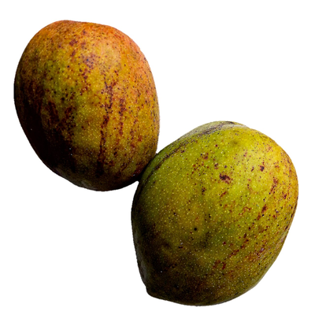 | 芒果 | 'Julie' mango on white background.jpg | Filo gèn' | CC BY-SA 4.0 | Commons |
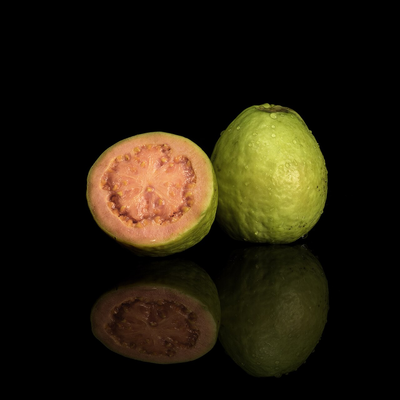 | 芭樂 | Goiaba vermelha.jpg | Rodrigo.Argenton | CC BY-SA 4.0 | Commons |
| 英語 | A pile of alphabet wooden blocks.jpg | Bobjgalindo | CC BY 4.0 | Commons | |
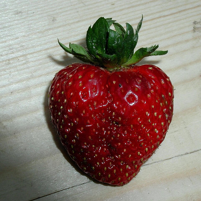 | 草莓 | Strawberry fruit in studio.jpg | Paolo Neo | Public domain | Commons |
 | 荔枝 | Lychee.jpg | Barry Fitzgerald, USDA | Public domain | Commons |
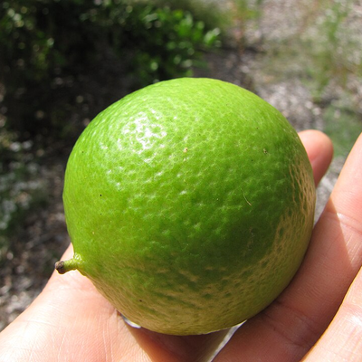 | 萊姆 | Starr-130504-4383-Citrus latifolia-Tahitian lime fruit-Hawea Pl Olinda-Maui (25092330352).jpg | Forest and Kim Starr | CC BY 3.0 us | Commons |
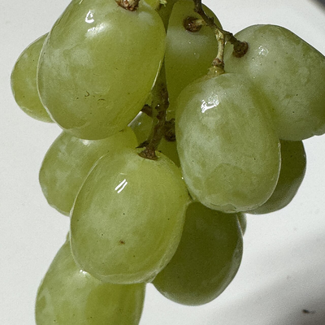 | 葡萄 | Green grape cluster on a white background.jpg | Endotoo | CC0 | Commons |
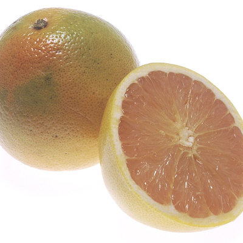 | 葡萄柚 | Grapefruit (1).jpg | Renee Comet (Photographer) | Public domain | Commons |
 | 蓮霧 | Wax apple (7).jpg | François Nguyen | CC BY 2.0 | Commons |
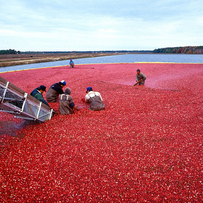 | 蔓越莓 | Cranberrys beim Ernten.jpeg | Keith Weller, USDA-ARS | Public domain | Commons |
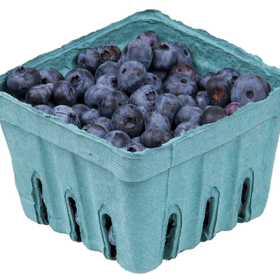 | 藍莓 | Blueberries-In-Pack.jpg | Evan-Amos | CC0 | Commons |
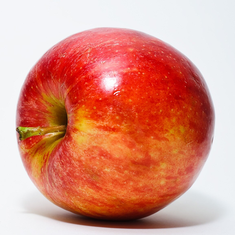 | 蘋果 | Red Apple.jpg | Abhijit Tembhekar from Mumbai, India | CC BY 2.0 | Commons |
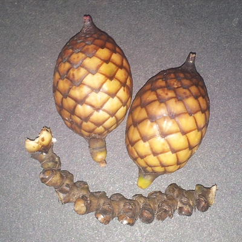 | 蛇皮果 | Salacca zalacca Philippines.jpg | Obsidian Soul | CC0 | Commons |
 | 西瓜 | Watermelon 3.jpg | Gaurav Dhwaj Khadka | CC BY-SA 4.0 | Commons |
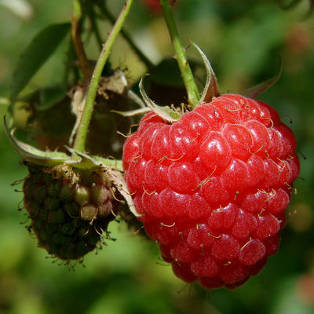 | 覆盆子 | Framboise Margy 3.jpg | Vassil | Public domain | Commons |
 | 酪梨 | Avocado fruit persea americana.jpg | Titus Tscharntke | Public domain | Commons |
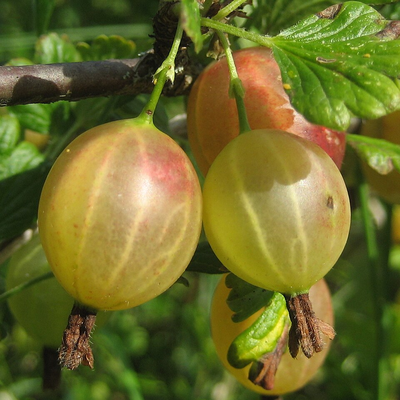 | 醋栗 | Gooseberries.JPG | Pavel Leman | CC BY-SA 3.0 | Commons |
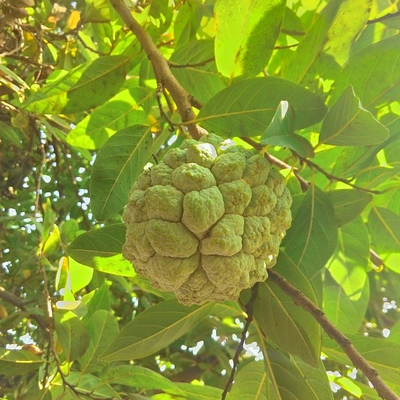 | 釋迦 | Custard apple 2017.jpg | Leroy Merlin | CC0 | Commons |
 | 香蕉 | Bunch of bananas on sale.jpg | Wilfredor | CC0 | Commons |
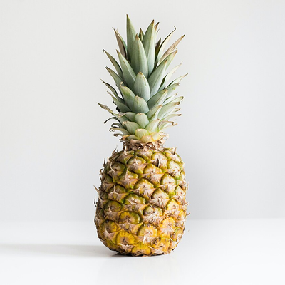 | 鳳梨 | Pineapple on white table.jpg | Julien Pianetti | CC0 | Commons |
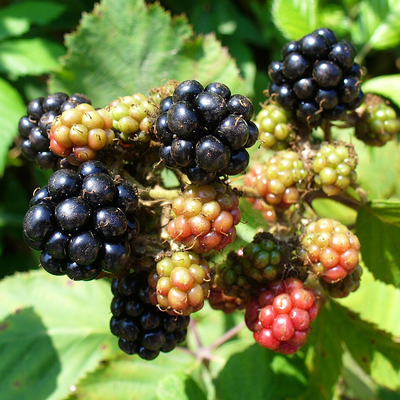 | 黑莓 | Blackberry fruits 2008 G1.jpg | George Chernilevsky | Public domain | Commons |
 | 龍眼 | Thailand longan.jpg | Fumikas Sagisavas | CC0 | Commons |
科目
| 圖片 | 詞 | 原始檔名 | 作者 | 授權 | 來源 |
|---|---|---|---|---|---|
| 國語 | Calligraphy brush at Zhu Jiuying's former residence.jpg | Mx. Granger | CC0 | Commons |
| 地理 | Terrestrial Globe MET 240594.jpg | Creator:James Wilson | CC0 | Commons | |
| 政治 | 2023 Polish parliamentary election and referendum. October 2023. Ballot box in Tomaszów Mazowiecki, Sikorskiego Street 6A.jpg | WrS.tm.pl | Public domain | Commons | |
| 數學 | 20th Century Small Wooden Abacus.jpg | Deinodactyla | CC0 | Commons |
| 生物 | Optical stereo microscope nikon smz10.jpg | GcG(jawp) | Public domain | Commons |
| 社會 | Street market in Uganda - 2015-03-14.jpg | Daniel Aufgang | CC BY 3.0 | Commons |
| 科目 | Old Gresham School Classroom - DPLA - a3b1f9cb951d10b6e8b7d8591436e206.jpg | — | Public domain | Commons | |
| 英語 | A pile of alphabet wooden blocks.jpg | Bobjgalindo | CC BY 4.0 | Commons |
分類封面
| 圖片 | 詞 | 原始檔名 | 作者 | 授權 | 來源 |
|---|---|---|---|---|---|
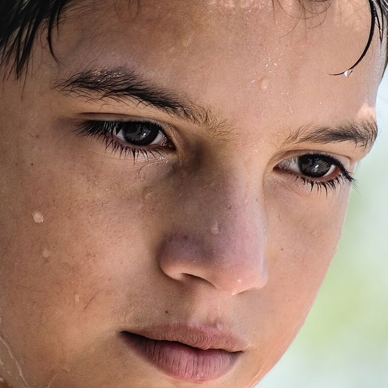 | 五官 | Boy Face from Venezuela.jpg | Wilfredor | CC0 | Commons |
 | 交通工具 | Mexican Standoff, Bus Car, Grafton Bridge.jpg | Ingolfson | CC0 | Commons |
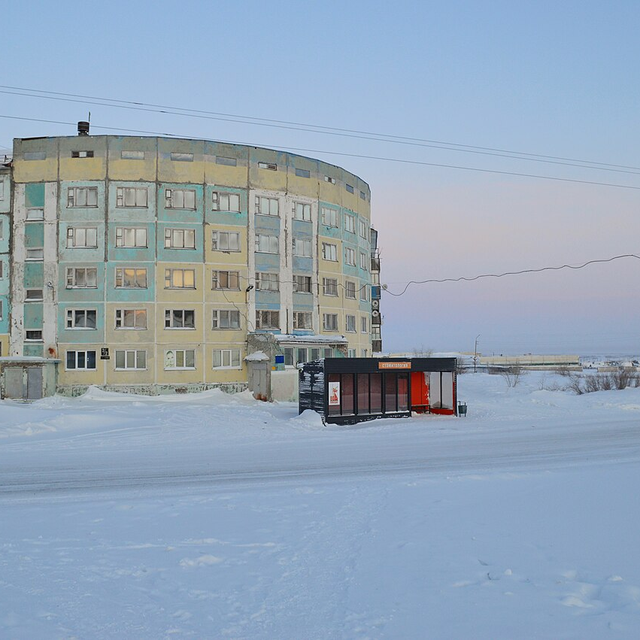 | 公共設施 | Stomatology bus stop, Vorgashor.jpg | Лапоть | CC0 | Commons |
 | 場所 | Yangon, City square, Life on the streets, Myanmar.jpg | Vyacheslav Argenberg | CC BY 4.0 | Commons |
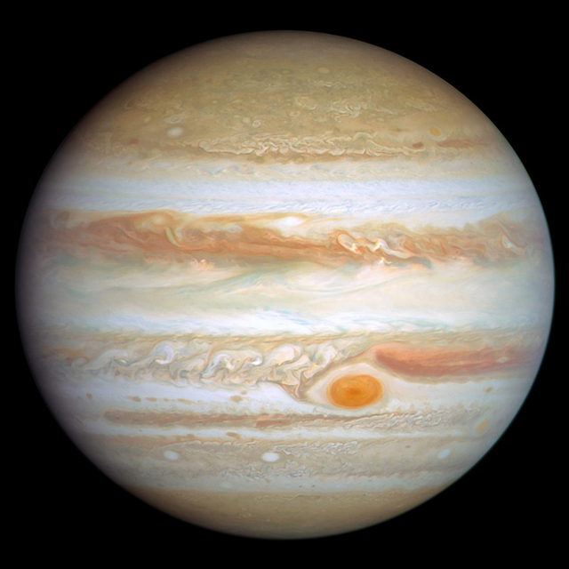 | 星球 | Jupiter OPAL 2024.png | NASA/STSCI (S.T.A.R.S) | Public domain | Commons |
| 體內器官 | Numbered organs 1.png | RWhitwam | CC BY-SA 4.0 | Commons |